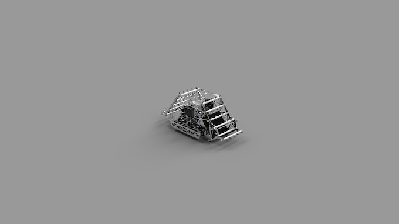
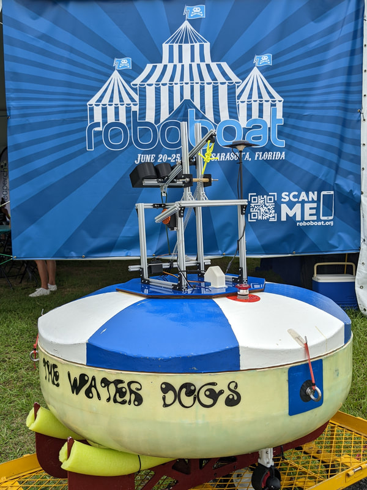

My Projects

Arteis Tennis Robot
The Arteis Tennis Robot was designed to revolutionize the world of tennis. Drawing from my own experiences as a tennis player of 10 years, I pondered upon ways to revolutionize the game. This led me to conceive the idea of an autonomous tennis robot that can both retrieve balls AND shoot them.
The versatility of the robot goes beyond its basic functionalities. It also serves as a formidable opponent, equipped with its own ball shooter mounted on a rotating turret.
By introducing the Arteis Tennis Robot, I aspire to elevate the game by embracing the possibilities that autonomous technology offers. Its unique capabilities not only enhance the training experience but also introduces a new level of efficiency to the game.
The versatility of the robot goes beyond its basic functionalities. It also serves as a formidable opponent, equipped with its own ball shooter mounted on a rotating turret.
By introducing the Arteis Tennis Robot, I aspire to elevate the game by embracing the possibilities that autonomous technology offers. Its unique capabilities not only enhance the training experience but also introduces a new level of efficiency to the game.
Robotics Competitions

RoboNation RoboBoat is a collegiate-level robotics competition in which universities from around the world participate. Teams from esteemed institutions like MIT, UMich, Georgia Tech, and several other countries gathered at Nathan Benderson Park in Sarasota, Florida, to engage in a series of challenging tasks. One of the entry-level challenges, for instance, involved navigating through two gates of buoys without collision. Despite its apparent simplicity, this task required the utilization of various sensors to determine position accurately and compensate for the effects of wind.
To tackle this, I contributed to the development of a path-following algorithm that relied on GPS and UTM coordinates. This algorithm enabled our robot to navigate towards a predefined set of waypoints effectively. Additionally, we integrated an inertial measurement unit and a gyro, which, in conjunction with a PID (Proportional, Integral, Derivative) algorithm, facilitated precise control and guidance of our robot's heading. In order to perceive and analyze the surrounding environment, we incorporated the ZED 2 Artificial Intelligence camera, which employed simultaneous localization and mapping (SLAM) techniques. Furthermore, we leveraged the YOLOV5 framework to create a machine learning model capable of detecting various obstacles throughout the course. Lastly, we employed a Velodyne LiDAR Sensor to generate a PointCloud representing our surroundings. I contributed to the development of a clustering algorithm that allowed us to identify specific objects. Additionally, we employed classification techniques, such as ratio-checking, to determine whether an object was a buoy or not. Our code was designed using the Robot Operating System (ROS) framework in conjunction with Python3.